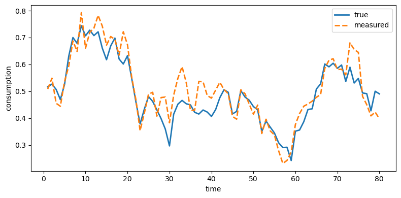
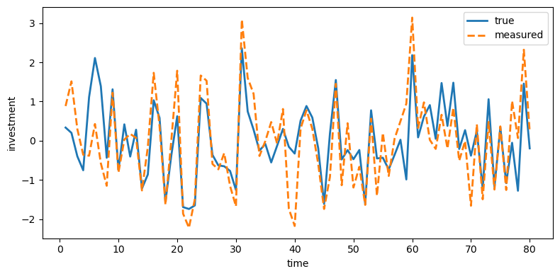
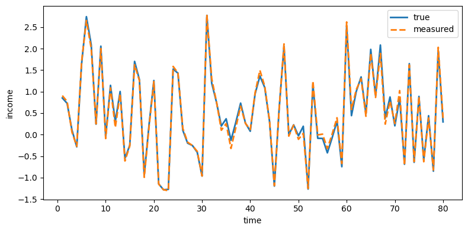
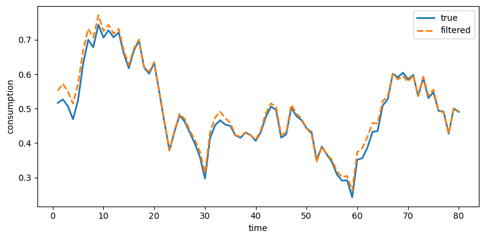
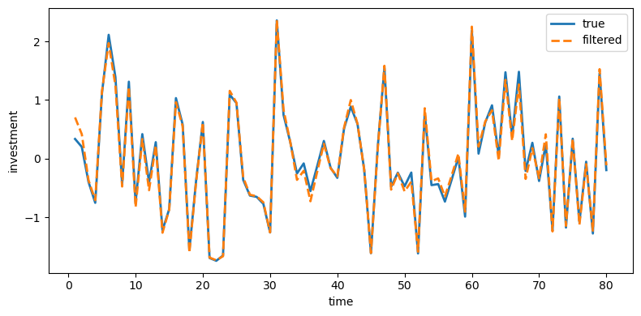
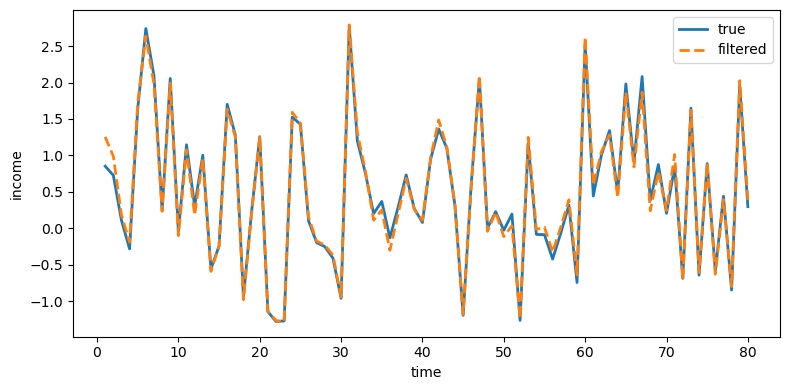
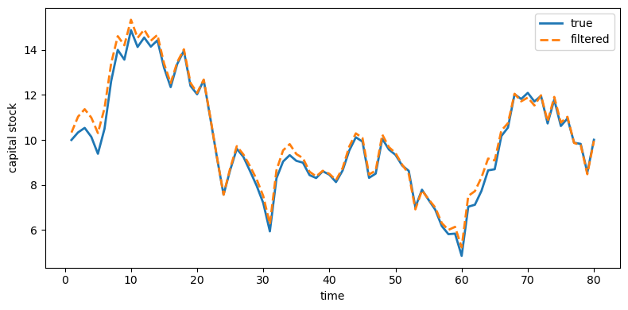
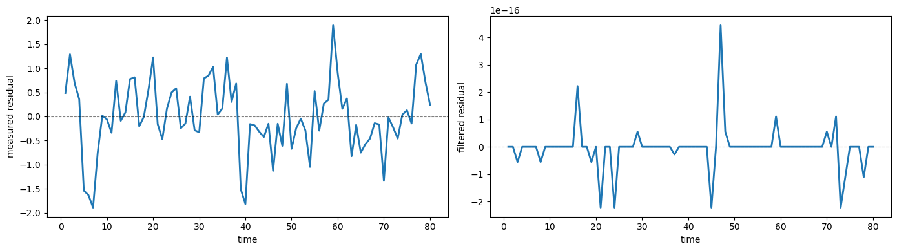

43. Two Models of Measurements and the Investment Accelerator#
43.1. Overview#
“Rational expectations econometrics” aims to interpret economic time series in terms of objects that are meaningful to economists, namely, parameters describing preferences, technologies, information sets, endowments, and equilibrium concepts.
When fully worked out, rational expectations models typically deliver a well-defined mapping from these economically interpretable parameters to the moments of the time series determined by the model.
If accurate observations on these time series are available, one can use that mapping to implement parameter estimation methods based either on the likelihood function or on the method of moments.
Note
This is why econometrics estimation is often called an ‘‘inverse’’ problem, while simulating a model for given parameter values is called a ‘‘direct problem’’. The direct problem refers to the mapping we have just described, while the inverse problem involves somehow applying an ‘‘inverse’’ of that mapping to a data set that is treated as if it were one draw from the joint probability distribution described by the mapping.
However, if only error-ridden data exist for the variables of interest, then more steps are needed to extract parameter estimates.
In effect, we require a model of the data reporting agency, one that is workable enough that we can determine the mapping induced jointly by the dynamic economic model and the measurement process to the probability law for the measured data.
The model chosen for the data collection agency is an aspect of an econometric specification that can make big differences in inferences about the economic structure.
Sargent [1989] describes two alternative models of data generation in a permanent income economy in which the investment accelerator, the mechanism studied in these two quantecon lectures – Samuelson Multiplier-Accelerator and The Acceleration Principle and the Nature of Business Cycles – shapes business cycle fluctuations.
In Model 1, the data collecting agency simply reports the error-ridden data that it collects.
In Model 2, the data collection agents first collects error-ridden data that satisfy a classical errors-in-variables model, then filters the data, and reports the filtered objects.
Although the two models have the same “deep parameters,” they produce quite different sets of restrictions on the data.
In this lecture we follow Sargent [1989] and study how these alternative measurement schemes affect empirical implications.
We start with imports and helper functions to be used throughout this lecture to generate LaTeX output
import numpy as np
import pandas as pd
import matplotlib.pyplot as plt
from scipy import linalg
from IPython.display import Latex
np.set_printoptions(precision=3, suppress=True)
def df_to_latex_matrix(df, label=''):
"""Convert DataFrame to LaTeX matrix."""
lines = [r'\begin{bmatrix}']
for idx, row in df.iterrows():
row_str = ' & '.join(
[f'{v:.4f}' if isinstance(v, (int, float))
else str(v) for v in row]) + r' \\'
lines.append(row_str)
lines.append(r'\end{bmatrix}')
if label:
return '$' + label + ' = ' + '\n'.join(lines) + '$'
else:
return '$' + '\n'.join(lines) + '$'
def df_to_latex_array(df):
"""Convert DataFrame to LaTeX array."""
n_rows, n_cols = df.shape
# Build column format (centered columns)
col_format = 'c' * (n_cols + 1) # +1 for index
# Start array
lines = [r'\begin{array}{' + col_format + '}']
# Header row
header = ' & '.join([''] + [str(c) for c in df.columns]) + r' \\'
lines.append(header)
lines.append(r'\hline')
# Data rows
for idx, row in df.iterrows():
row_str = str(idx) + ' & ' + ' & '.join(
[f'{v:.3f}' if isinstance(v, (int, float)) else str(v)
for v in row]) + r' \\'
lines.append(row_str)
lines.append(r'\end{array}')
return '$' + '\n'.join(lines) + '$'
43.2. The economic model#
The data are generated by a linear-quadratic version of a stochastic optimal growth model that is an instance of models described in this quantecon lecture: The Permanent Income Model.
A social planner chooses a stochastic process for \(\{c_t, k_{t+1}\}_{t=0}^\infty\) that maximizes
subject to the restrictions imposed by the technology
Here \(c_t\) is consumption, \(k_t\) is the capital stock, \(f\) is the gross rate of return on capital, and \(\theta_t\) is an endowment or technology shock following
where \(L\) is the backward shift (or ‘lag’) operator and \(a(z) = 1 - a_1 z - a_2 z^2 - \cdots - a_r z^r\) having all its zeroes outside the unit circle.
43.2.1. Optimal decision rule#
The optimal decision rule for \(c_t\) is
where \(\alpha = u_1[1-(\beta f)^{-1}]/u_2\).
Equations (43.3) and (43.4) exhibit the cross-equation restrictions characteristic of rational expectations models.
43.2.2. Net income and the accelerator#
Define net output or national income as
Note that (43.2) and (43.5) imply \((k_{t+1} - k_t) + c_t = y_{nt}\).
To obtain both a version of Friedman [1956]’s geometric distributed lag consumption function and a distributed lag accelerator, we impose two assumptions:
\(a(L) = 1\), so that \(\theta_t\) is white noise.
\(\beta f = 1\), so the rate of return on capital equals the rate of time preference.
Assumption 1 is crucial for the strict form of the accelerator.
Relaxing it to allow serially correlated \(\theta_t\) preserves an accelerator in a broad sense but loses the sharp geometric-lag form of (43.8).
Adding a second shock breaks the one-index structure entirely and can generate nontrivial Granger causality even without measurement error.
Assumption 2 is less important, affecting only various constants.
Under both assumptions, (43.4) simplifies to
When (43.6), (43.5), and (43.2) are combined, the optimal plan satisfies
Equation (43.7) is Friedman’s consumption model: consumption is a geometric distributed lag of income, with the decay coefficient \(\beta\) equal to the discount factor.
Equation (43.8) is the distributed lag accelerator: investment is a geometric distributed lag of the first difference of income.
This is the same mechanism that Chow [1968] documented empirically (see The Acceleration Principle and the Nature of Business Cycles).
Equation (43.9) states that the first difference of disposable income is a first-order moving average process with innovation equal to the innovation of the endowment shock \(\theta_t\).
As Muth [1960] showed, such a process is optimally forecast via a geometric distributed lag or “adaptive expectations” scheme.
43.2.3. The accelerator puzzle#
When all variables are measured accurately and are driven by the single shock \(\theta_t\), the spectral density matrix of \((c_t,\, k_{t+1}-k_t,\, y_{nt})\) has rank one at all frequencies.
Each variable is an invertible one-sided distributed lag of the same white noise, so no variable Granger-causes any other.
Empirically, however, measures of output Granger-cause investment but not vice versa.
Sargent [1989] shows that measurement error can resolve this puzzle.
To illustrate, suppose first that output \(y_{nt}\) is measured perfectly while consumption and capital are each polluted by serially correlated measurement errors \(v_{ct}\) and \(v_{kt}\) orthogonal to \(\theta_t\).
Let \(\bar c_t\) and \(\bar k_{t+1} - \bar k_t\) denote the measured series. Then
In this case income Granger-causes consumption and investment but is not Granger-caused by them.
When each measured series is corrupted by measurement error, every measured variable will in general Granger-cause every other.
The strength of this Granger causality, as measured by decompositions of \(j\)-step-ahead prediction error variances, depends on the relative variances of the measurement errors.
In this case, each observed series mixes the common signal \(\theta_t\) with idiosyncratic measurement noise.
A series with lower measurement error variance tracks \(\theta_t\) more closely, so its innovations contain more information about future values of the other series.
Accordingly, in a forecast-error-variance decomposition, shocks to better-measured series account for a larger share of other variables’ \(j\)-step-ahead prediction errors.
In a one-common-index model like this one (\(\theta_t\) is the common index), better-measured variables extend more Granger causality to less well measured series than vice versa.
This asymmetry drives the numerical results we observe soon.
43.2.4. State-space formulation#
Let’s map the economic model and the measurement process into a linear state-space framework.
Set \(f = 1.05\) and \(\theta_t \sim \mathcal{N}(0, 1)\).
Define the state and observation vectors
so that the error-free data are described by the state-space system
where \(\varepsilon_t = \begin{bmatrix} 0 \\ \theta_t \end{bmatrix}\) has covariance \(E \varepsilon_t \varepsilon_t^\top = Q\) and the matrices are
\(Q\) is singular because there is only one source of randomness \(\theta_t\); the capital stock \(k_t\) evolves deterministically given \(\theta_t\).
# Baseline structural matrices for the true economy
f = 1.05
β = 1 / f
A = np.array([
[1.0, 1.0 / f],
[0.0, 0.0]
])
C = np.array([
[f - 1.0, 1.0],
[f - 1.0, 1.0 - 1.0 / f],
[0.0, 1.0 / f]
])
Q = np.array([
[0.0, 0.0],
[0.0, 1.0]
])
43.2.5. True impulse responses#
Before introducing measurement error, we compute the impulse response of the error-free variables to a unit shock \(\theta_0 = 1\).
This benchmark clarifies what changes when we later switch from error-free variables to variables reported by the statistical agency.
The response shows the investment accelerator clearly: the full impact on net income \(y_n\) occurs at lag 0, while consumption adjusts by only \(1 - f^{-1} \approx 0.048\) and investment absorbs the remainder.
From lag 1 onward the economy is in its new steady state
def table2_irf(A, C, n_lags=6):
x = np.array([0.0, 1.0]) # k_0 = 0, theta_0 = 1
rows = []
for j in range(n_lags):
y_n, c, d_k = C @ x
rows.append([y_n, c, d_k])
x = A @ x
return pd.DataFrame(rows, columns=[r'y_n', r'c', r'\Delta k'],
index=pd.Index(range(n_lags), name='lag'))
table2 = table2_irf(A, C, n_lags=6)
display(Latex(df_to_latex_array(table2)))
43.3. Measurement errors#
Let’s add the measurement layer that generates reported data.
The econometrician does not observe \(z_t\) directly but instead sees \(\bar z_t = z_t + v_t\), where \(v_t\) is a vector of measurement errors.
Measurement errors follow an AR(1) process
where \(\eta_t\) is a vector white noise with \(E \eta_t \eta_t^\top = \Sigma_\eta\) and \(E \varepsilon_t v_s^\top = 0\) for all \(t, s\).
The parameters are
so the unconditional covariance of \(v_t\) is
The innovation variances are smallest for consumption (\(\sigma_\eta = 0.035\)), next for income (\(\sigma_\eta = 0.05\)), and largest for investment (\(\sigma_\eta = 0.65\)).
As in Sargent [1989] and our discussion above, what matters for Granger-causality asymmetries is the overall measurement quality in the full system: output is relatively well measured while investment is relatively poorly measured.
ρ = np.array([0.6, 0.7, 0.3])
D = np.diag(ρ)
# Innovation std. devs of η_t
σ_η = np.array([0.05, 0.035, 0.65])
Σ_η = np.diag(σ_η**2)
# Unconditional covariance of measurement errors v_t
R = np.diag((σ_η / np.sqrt(1.0 - ρ**2))**2)
print(f"f = {f}, β = 1/f = {β:.6f}")
print()
display(Latex(df_to_latex_matrix(pd.DataFrame(A), 'A')))
display(Latex(df_to_latex_matrix(pd.DataFrame(C), 'C')))
display(Latex(df_to_latex_matrix(pd.DataFrame(D), 'D')))
f = 1.05, β = 1/f = 0.952381
We will analyze the two reporting schemes separately, but first we need a solver for the steady-state Kalman gain and error covariances.
The function below iterates on the Riccati equation until convergence, returning the Kalman gain \(K\), the state covariance \(S\), and the innovation covariance \(V\)
def steady_state_kalman(A, C_obs, Q, R, W=None, tol=1e-13, max_iter=200_000):
"""
Solve steady-state Kalman equations for
x_{t+1} = A x_t + w_{t+1}
y_t = C_obs x_t + v_t
with cov(w)=Q, cov(v)=R, cov(w,v)=W.
"""
n = A.shape[0]
m = C_obs.shape[0]
if W is None:
W = np.zeros((n, m))
S = Q.copy()
for _ in range(max_iter):
V = C_obs @ S @ C_obs.T + R
K = (A @ S @ C_obs.T + W) @ np.linalg.inv(V)
S_new = Q + A @ S @ A.T - K @ V @ K.T
if np.max(np.abs(S_new - S)) < tol:
S = S_new
break
S = S_new
V = C_obs @ S @ C_obs.T + R
K = (A @ S @ C_obs.T + W) @ np.linalg.inv(V)
return K, S, V
With structural matrices and tools we need in place, we now follow Sargent [1989]’s two reporting schemes in sequence.
43.4. A classical model of measurements initially collected by an agency#
A data collecting agency observes a noise-corrupted version of \(z_t\), namely
We refer to this as Model 1: the agency collects noisy data and reports them without filtering.
To represent the second moments of the \(\bar z_t\) process, it is convenient to obtain its population vector autoregression.
The error vector in the vector autoregression is the innovation to \(\bar z_t\) and can be taken to be the white noise in a Wold moving average representation, which can be obtained by “inverting” the autoregressive representation.
The population vector autoregression, and how it depends on the parameters of the state-space system and the measurement error process, carries insights about how to interpret estimated vector autoregressions for \(\bar z_t\).
Constructing the vector autoregression is also useful as an intermediate step in computing the likelihood of a sample of \(\bar z_t\)’s as a function of the free parameters \(\{A, C, D, Q, R\}\).
The particular method that will be used to construct the vector autoregressive representation also proves useful as an intermediate step in constructing a model of an optimal reporting agency.
We use recursive (Kalman filtering) methods to obtain the vector autoregression for \(\bar z_t\).
43.4.1. Quasi-differencing#
Because the measurement errors \(v_t\) are serially correlated, the standard Kalman filter with white-noise measurement error cannot be applied directly to \(\bar z_t = C x_t + v_t\).
An alternative is to augment the state vector with the measurement-error AR components (see Appendix B of Sargent [1989]).
Here we take the quasi-differencing route described in Sargent [1989], which reduces the system to one with serially uncorrelated observation noise.
Define
Then the state-space system (43.13), the measurement error process (43.14), and the observation equation (43.15) imply the state-space system
where \((\varepsilon_t, \bar\nu_t)\) is a white noise process with
System (43.17) with covariances (43.18) is characterized by the five matrices \([A, \bar C, Q, R_1, W_1]\).
43.4.2. Innovations representation#
Associated with (43.17) and (43.18) is the innovations representation for \(\tilde z_t\),
where
\([K_1, S_1]\) are computed from the steady-state Kalman filter applied to \([A, \bar C, Q, R_1, W_1]\), and
From (43.20), \(u_t\) is the innovation process for the \(\bar z_t\) process.
43.4.3. Wold representation#
System (43.19) and definition (43.16) can be used to obtain a Wold vector moving average representation for the \(\bar z_t\) process:
where \(L\) is the lag operator.
From (43.17) and (43.19) the innovation covariance is
Below we compute \(K_1\), \(S_1\), and \(V_1\) numerically
C_bar = C @ A - D @ C
R1 = C @ Q @ C.T + R
W1 = Q @ C.T
K1, S1, V1 = steady_state_kalman(A, C_bar, Q, R1, W1)
43.4.4. Computing coefficients in a Wold moving average representation#
To compute the moving average coefficients in (43.22) numerically, define the augmented state
with dynamics
where
The moving average coefficients are then \(\psi_0 = I\) and \(\psi_j = H_1 F_1^{j-1} G_1\) for \(j \geq 1\).
F1 = np.block([
[A, np.zeros((2, 3))],
[C_bar, D]
])
G1 = np.vstack([K1, np.eye(3)])
H1 = np.hstack([C_bar, D])
def measured_wold_coeffs(F, G, H, n_terms=25):
psi = [np.eye(3)]
Fpow = np.eye(F.shape[0])
for _ in range(1, n_terms):
psi.append(H @ Fpow @ G)
Fpow = Fpow @ F
return psi
def fev_contributions(psi, V, n_horizons=20):
"""
Returns contrib[var, shock, h-1] = contribution at horizon h.
"""
P = linalg.cholesky(V, lower=True)
out = np.zeros((3, 3, n_horizons))
for h in range(1, n_horizons + 1):
acc = np.zeros((3, 3))
for j in range(h):
T = psi[j] @ P
acc += T**2
out[:, :, h - 1] = acc
return out
psi1 = measured_wold_coeffs(F1, G1, H1, n_terms=40)
resp1 = np.array(
[psi1[j] @ linalg.cholesky(V1, lower=True) for j in range(14)])
decomp1 = fev_contributions(psi1, V1, n_horizons=20)
43.4.5. Gaussian likelihood#
The Gaussian log-likelihood function for a sample \(\{\bar z_t,\, t=0,\ldots,T\}\), conditioned on an initial state estimate \(\hat x_0\), can be represented as
where \(u_t\) is a function of \(\{\bar z_t\}\) defined by (43.25) below.
To use (43.19) to compute \(\{u_t\}\), it is useful to represent it as
where \(\tilde z_t = \bar z_{t+1} - D\bar z_t\) is the quasi-differenced observation.
Given \(\hat x_0\), equation (43.25) can be used recursively to compute a \(\{u_t\}\) process.
Equations (43.24) and (43.25) give the likelihood function of a sample of error-corrupted data \(\{\bar z_t\}\).
43.4.6. Forecast-error-variance decomposition#
To measure the relative importance of each innovation, we decompose the \(j\)-step-ahead forecast-error variance of each measured variable.
Write \(\bar z_{t+j} - E_t \bar z_{t+j} = \sum_{i=0}^{j-1} \psi_i u_{t+j-i}\).
Let \(P\) be the lower-triangular Cholesky factor of \(V_1\) so that the orthogonalized innovations are \(e_t = P^{-1} u_t\).
Then the contribution of orthogonalized innovation \(k\) to the \(j\)-step-ahead variance of variable \(m\) is \(\sum_{i=0}^{j-1} (\psi_i P)_{mk}^2\).
The table below shows the cumulative contribution of each orthogonalized innovation to the forecast-error variance of \(y_n\), \(c\), and \(\Delta k\) at horizons 1 through 20.
Each panel fixes one orthogonalized innovation and reports its cumulative contribution to each variable’s forecast-error variance.
Rows are forecast horizons and columns are forecasted variables.
horizons = np.arange(1, 21)
labels = [r'y_n', r'c', r'\Delta k']
def fev_table(decomp, shock_idx, horizons):
return pd.DataFrame(
np.round(decomp[:, shock_idx, :].T, 4),
columns=labels,
index=pd.Index(horizons, name='j')
)
shock_titles = [r'\text{A. Innovation in } y_n',
r'\text{B. Innovation in } c',
r'\text{C. Innovation in } \Delta k']
parts = []
for i, title in enumerate(shock_titles):
arr = df_to_latex_array(fev_table(decomp1, i, horizons)).strip('$')
parts.append(
r'\begin{array}{c} ' + title + r' \\ ' + arr + r' \end{array}')
display(Latex('$' + r' \quad '.join(parts) + '$'))
The income innovation accounts for substantial proportions of forecast-error variance in all three variables, while the consumption and investment innovations contribute mainly to their own variances.
This is a Granger causality pattern: income appears to Granger-cause consumption and investment, but not vice versa.
This matches the paper’s message that, in a one-common-index model, the relatively best measured series has the strongest predictive content.
Let’s look at the covariance matrix of the innovations
print('Covariance matrix of innovations:')
df_v1 = pd.DataFrame(np.round(V1, 4), index=labels, columns=labels)
display(Latex(df_to_latex_matrix(df_v1)))
Covariance matrix of innovations:
The covariance matrix of the innovations is not diagonal, but the eigenvalues are well separated as shown below
print('Eigenvalues of covariance matrix:')
print(np.sort(np.linalg.eigvalsh(V1))[::-1].round(4))
Eigenvalues of covariance matrix:
[2.161 0.218 0.002]
The first eigenvalue is much larger than the others, consistent with the presence of a dominant common shock \(\theta_t\)
43.4.7. Wold impulse responses#
Impulse responses in the Wold representation are reported using orthogonalized innovations (Cholesky factorization of \(V_1\) with ordering \(y_n\), \(c\), \(\Delta k\)).
Under this method, lag-0 responses reflect both contemporaneous covariance and the Cholesky ordering.
We first define a helper function to format the response coefficients as a LaTeX array
lags = np.arange(14)
def wold_response_table(resp, shock_idx, lags):
return pd.DataFrame(
np.round(resp[:, :, shock_idx], 4),
columns=labels,
index=pd.Index(lags, name='j')
)
Now we report the impulse responses to each orthogonalized innovation in a single table with three panels
wold_titles = [r'\text{A. Response to } y_n \text{ innovation}',
r'\text{B. Response to } c \text{ innovation}',
r'\text{C. Response to } \Delta k \text{ innovation}']
parts = []
for i, title in enumerate(wold_titles):
arr = df_to_latex_array(wold_response_table(resp1, i, lags)).strip('$')
parts.append(
r'\begin{array}{c} ' + title + r' \\ ' + arr + r' \end{array}')
display(Latex('$' + r' \quad '.join(parts) + '$'))
At impact, the first orthogonalized innovation loads on all three measured variables.
At subsequent lags the income innovation generates persistent responses in all three variables because, being the best-measured series, its innovation is dominated by the true permanent shock \(\theta_t\).
The consumption and investment innovations produce responses that decay according to the AR(1) structure of their respective measurement errors (\(\rho_c = 0.7\), \(\rho_{\Delta k} = 0.3\)), with little spillover to other variables.
43.5. A model of optimal estimates reported by an agency#
Suppose that instead of reporting the error-corrupted data \(\bar z_t\), the data collecting agency reports linear least-squares projections of the true data on a history of the error-corrupted data.
This model provides a possible way of interpreting two features of the data-reporting process.
seasonal adjustment: if the components of \(v_t\) have strong seasonals, the optimal filter will assume a shape that can be interpreted partly in terms of a seasonal adjustment filter, one that is one-sided in current and past \(\bar z_t\)’s.
data revisions: if \(z_t\) contains current and lagged values of some variable of interest, then the model simultaneously determines “preliminary,” “revised,” and “final” estimates as successive conditional expectations based on progressively longer histories of error-ridden observations.
To make this operational, we impute to the reporting agency a model of the joint process generating the true data and the measurement errors.
We assume that the reporting agency has “rational expectations”: it knows the economic and measurement structure leading to (43.17)–(43.18).
To prepare its estimates, the reporting agency itself computes the Kalman filter to obtain the innovations representation (43.19).
Rather than reporting the error-corrupted data \(\bar z_t\), the agency reports \(\tilde z_t = G \hat x_t\), where \(G\) is a “selection matrix,” possibly equal to \(C\), for the data reported by the agency.
The data \(G \hat x_t = E[G x_t \mid \bar z_t, \bar z_{t-1}, \ldots, \hat x_0]\).
The state-space representation for the reported data is then
where the first line of (43.26) is from the innovations representation (43.19).
Note that \(u_t\) is the innovation to \(\bar z_{t+1}\) and is not the innovation to \(\tilde z_t\).
To obtain a Wold representation for \(\tilde z_t\) and the likelihood function for a sample of \(\tilde z_t\) requires that we obtain an innovations representation for (43.26).
43.5.1. Innovations representation for filtered data#
To add a little generality to (43.26) we amend it to the system
where \(\eta_t\) is a type 2 white-noise measurement error process (“typos”) with presumably very small covariance matrix \(R_2\).
The covariance matrix of the joint noise is
where \(Q_2 = K_1 V_1 K_1^\top\).
If \(R_2\) is singular, it is necessary to adjust the Kalman filtering formulas by using transformations that induce a “reduced order observer.”
In practice, we approximate a zero \(R_2\) matrix with the matrix \(\epsilon I\) for a small \(\epsilon > 0\) to keep the Kalman filter numerically well-conditioned.
For system (43.27) and (43.28), an innovations representation is
where
Thus \(\{a_t\}\) is the innovation process for the reported data \(\tilde z_t\), with innovation covariance
43.5.2. Wold representation#
A Wold moving average representation for \(\tilde z_t\) is found from (43.29) to be
with coefficients \(\psi_0 = I\) and \(\psi_j = G A^{j-1} K_2\) for \(j \geq 1\).
Note that this is simpler than the Model 1 Wold representation (43.22) because there is no quasi-differencing to undo.
43.5.3. Gaussian likelihood#
When a method analogous to Model 1 is used, a Gaussian log-likelihood for \(\tilde z_t\) can be computed by first computing an \(\{a_t\}\) sequence from observations on \(\tilde z_t\) by using
The likelihood function for a sample of \(T\) observations \(\{\tilde z_t\}\) is then
Note that relative to computing the likelihood function (43.24) for the error-corrupted data, computing the likelihood function for the optimally filtered data requires more calculations.
Both likelihood functions require that the Kalman filter (43.20) be computed, while the likelihood function for the filtered data requires that the Kalman filter (43.30) also be computed.
In effect, in order to interpret and use the filtered data reported by the agency, it is necessary to retrace the steps that the agency used to synthesize those data.
The Kalman filter (43.20) is supposed to be formed by the agency.
The agency need not use Kalman filter (43.30) because it does not need the Wold representation for the filtered data.
In our parameterization \(G = C\).
Q2 = K1 @ V1 @ K1.T
ε = 1e-6
K2, S2, V2 = steady_state_kalman(A, C, Q2, ε * np.eye(3))
def filtered_wold_coeffs(A, C, K, n_terms=25):
psi = [np.eye(3)]
Apow = np.eye(2)
for _ in range(1, n_terms):
psi.append(C @ Apow @ K)
Apow = Apow @ A
return psi
psi2 = filtered_wold_coeffs(A, C, K2, n_terms=40)
resp2 = np.array(
[psi2[j] @ linalg.cholesky(V2, lower=True) for j in range(14)])
decomp2 = fev_contributions(psi2, V2, n_horizons=20)
43.5.4. Forecast-error-variance decomposition#
Because the filtered data are nearly noiseless, the innovation covariance \(V_2\) is close to singular with one dominant eigenvalue.
This means the filtered economy is driven by essentially one shock, just like the true economy
parts = []
for i, title in enumerate(shock_titles):
arr = df_to_latex_array(fev_table(decomp2, i, horizons)).strip('$')
parts.append(
r'\begin{array}{c} ' + title + r' \\ ' + arr + r' \end{array}')
display(Latex('$' + r' \quad '.join(parts) + '$'))
In Model 2, the first innovation accounts for virtually all forecast-error variance, just as in the true economy where the single structural shock \(\theta_t\) drives everything.
The second and third innovations contribute negligibly.
This confirms that filtering strips away the measurement noise that created the appearance of multiple independent sources of variation in Model 1.
The covariance matrix and eigenvalues of the Model 2 innovations are
print('Covariance matrix of innovations:')
df_v2 = pd.DataFrame(np.round(V2, 4), index=labels, columns=labels)
display(Latex(df_to_latex_matrix(df_v2)))
Covariance matrix of innovations:
print('Eigenvalues of covariance matrix:')
print(np.sort(np.linalg.eigvalsh(V2))[::-1].round(4))
Eigenvalues of covariance matrix:
[1.899 0. 0. ]
As Sargent [1989] emphasizes, the two models of measurement produce quite different inferences about the economy’s dynamics despite sharing identical underlying parameters.
43.5.5. Wold impulse responses#
We again use orthogonalized Wold representation impulse responses with a Cholesky decomposition of \(V_2\) ordered as \(y_n\), \(c\), \(\Delta k\).
parts = []
for i, title in enumerate(wold_titles):
arr = df_to_latex_array(
wold_response_table(resp2, i, lags)).strip('$')
parts.append(
r'\begin{array}{c} ' + title + r' \\ ' + arr + r' \end{array}')
display(Latex('$' + r' \quad '.join(parts) + '$'))
The income innovation in Model 2 produces responses that closely approximate the true impulse response function from the structural shock \(\theta_t\).
Readers can compare the left table with the table in the True impulse responses section above.
The numbers are essentially the same.
The consumption and investment innovations produce responses that are orders of magnitude smaller, confirming that the filtered data are driven by essentially one shock.
Unlike Model 1, the filtered data from Model 2 cannot reproduce the apparent Granger causality pattern that the accelerator literature has documented empirically.
Hence, at the population level, the two measurement models imply different empirical stories even though they share the same structural economy.
In Model 1 (raw data), measurement noise creates multiple innovations and an apparent Granger-causality pattern.
In Model 2 (filtered data), innovations collapse back to essentially one dominant shock, mirroring the true one-index economy.
Let’s verify these implications in a finite sample simulation.
43.6. Simulation#
The tables above characterize population moments of the two models.
Let’s simulate 80 periods of true, measured, and filtered data to compare population implications with finite-sample behavior.
First, we define a function to simulate the true economy, generate measured data with AR(1) measurement errors, and apply the Model 1 Kalman filter to produce filtered estimates
def simulate_series(seed=7909, T=80, k0=10.0):
"""
Simulate true, measured, and filtered series.
"""
rng = np.random.default_rng(seed)
# True state/observables
θ = rng.normal(0.0, 1.0, size=T)
k = np.empty(T + 1)
k[0] = k0
y = np.empty(T)
c = np.empty(T)
dk = np.empty(T)
for t in range(T):
x_t = np.array([k[t], θ[t]])
y[t], c[t], dk[t] = C @ x_t
k[t + 1] = k[t] + (1.0 / f) * θ[t]
# Measured data with AR(1) errors
v_prev = np.zeros(3)
v = np.empty((T, 3))
for t in range(T):
η_t = rng.multivariate_normal(np.zeros(3), Σ_η)
v_prev = D @ v_prev + η_t
v[t] = v_prev
z_meas = np.column_stack([y, c, dk]) + v
# Filtered data via Model 1 transformed filter
xhat_prev = np.array([k0, 0.0])
z_prev = np.zeros(3)
z_filt = np.empty((T, 3))
k_filt = np.empty(T)
for t in range(T):
z_bar_t = z_meas[t] - D @ z_prev
u_t = z_bar_t - C_bar @ xhat_prev
xhat_t = A @ xhat_prev + K1 @ u_t
z_filt[t] = C @ xhat_t
k_filt[t] = xhat_t[0]
xhat_prev = xhat_t
z_prev = z_meas[t]
out = {
"y_true": y, "c_true": c, "dk_true": dk, "k_true": k[:-1],
"y_meas": z_meas[:, 0], "c_meas": z_meas[:, 1],
"dk_meas": z_meas[:, 2],
"y_filt": z_filt[:, 0], "c_filt": z_filt[:, 1],
"dk_filt": z_filt[:, 2], "k_filt": k_filt
}
return out
sim = simulate_series(seed=7909, T=80, k0=10.0)
We use the following helper function to plot the true series against either the measured or filtered series
def plot_true_vs_other(t, true_series, other_series,
other_label, ylabel=""):
fig, ax = plt.subplots(figsize=(8, 4))
ax.plot(t, true_series, lw=2, label="true")
ax.plot(t, other_series, lw=2, ls="--", label=other_label)
ax.set_xlabel("time")
ax.set_ylabel(ylabel)
ax.legend()
plt.tight_layout()
plt.show()
t = np.arange(1, 81)
Let’s first compare the true series with the measured series to see how measurement errors distort the data
plot_true_vs_other(t, sim["c_true"], sim["c_meas"],
"measured", ylabel="consumption")

Fig. 43.1 True and measured consumption#
plot_true_vs_other(t, sim["dk_true"], sim["dk_meas"],
"measured", ylabel="investment")

Fig. 43.2 True and measured investment#
plot_true_vs_other(t, sim["y_true"], sim["y_meas"],
"measured", ylabel="income")

Fig. 43.3 True and measured income#
Investment is distorted the most because its measurement error has the largest innovation variance (\(\sigma_\eta = 0.65\)), while income is distorted the least (\(\sigma_\eta = 0.05\)).
For the filtered series, we expect the Kalman filter to recover the true series more closely by stripping away measurement noise
plot_true_vs_other(t, sim["c_true"], sim["c_filt"],
"filtered", ylabel="consumption")

Fig. 43.4 True and filtered consumption#
plot_true_vs_other(t, sim["dk_true"], sim["dk_filt"],
"filtered", ylabel="investment")

Fig. 43.5 True and filtered investment#
plot_true_vs_other(t, sim["y_true"], sim["y_filt"],
"filtered", ylabel="income")

Fig. 43.6 True and filtered income#
plot_true_vs_other(t, sim["k_true"], sim["k_filt"],
"filtered", ylabel="capital stock")

Fig. 43.7 True and filtered capital stock#
Indeed, Kalman-filtered estimates from Model 1 remove much of the measurement noise and track the truth closely.
In the true model the national income identity \(c_t + \Delta k_t = y_{n,t}\) holds exactly.
Independent measurement errors break this accounting identity in the measured data.
The Kalman filter approximately restores it.
The following figure confirms this by showing the residual \(c_t + \Delta k_t - y_{n,t}\) for both measured and filtered data
fig, (ax1, ax2) = plt.subplots(1, 2, figsize=(14, 4))
ax1.plot(t, sim["c_meas"] + sim["dk_meas"] - sim["y_meas"], lw=2)
ax1.axhline(0, color='black', lw=0.8, ls='--', alpha=0.5)
ax1.set_xlabel("time")
ax1.set_ylabel("measured residual")
ax2.plot(t, sim["c_filt"] + sim["dk_filt"] - sim["y_filt"], lw=2)
ax2.axhline(0, color='black', lw=0.8, ls='--', alpha=0.5)
ax2.set_xlabel("time")
ax2.set_ylabel("filtered residual")
plt.tight_layout()
plt.show()

Fig. 43.8 National income identity residual#
As we have predicted, the residual for the measured data is large and volatile, while the residual for the filtered data is numerically 0.
43.7. Summary#
Sargent [1989] shows how measurement error alters an econometrician’s view of a permanent income economy driven by the investment accelerator.
The Wold representations and variance decompositions of Model 1 (raw measurements) and Model 2 (filtered measurements) differ substantially, even though the underlying economy is the same.
Measurement error can reshape inferences about which shocks drive which variables.
Model 1 reproduces the Granger causality pattern documented in the empirical accelerator literature: income appears to Granger-cause consumption and investment, a result Sargent [1989] attributes to measurement error and signal extraction in raw reported data.
Model 2, working with filtered data, attributes nearly all variance to the single structural shock \(\theta_t\) and cannot reproduce the Granger causality pattern.
The Kalman filter effectively strips measurement noise from the data, so the filtered series track the truth closely.
Raw measurement error breaks the national income accounting identity, but the near-zero residual shows that the filter approximately restores it.